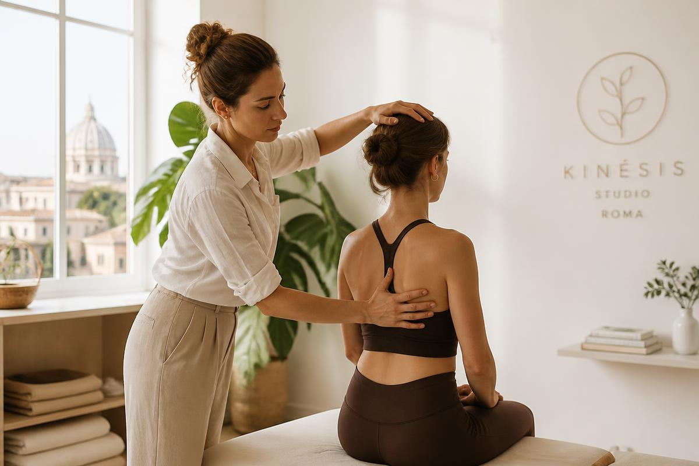
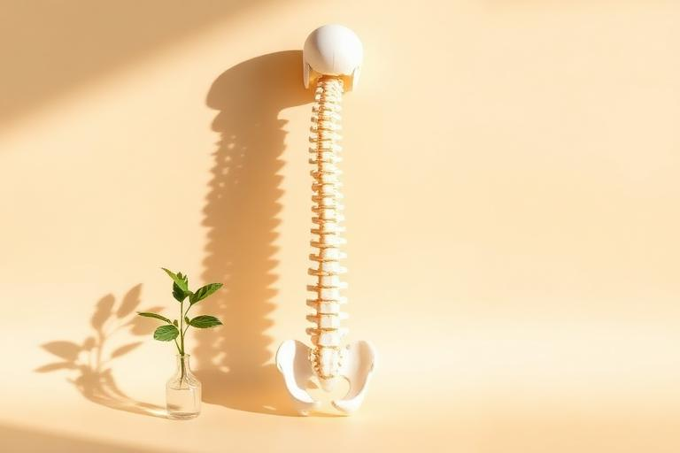
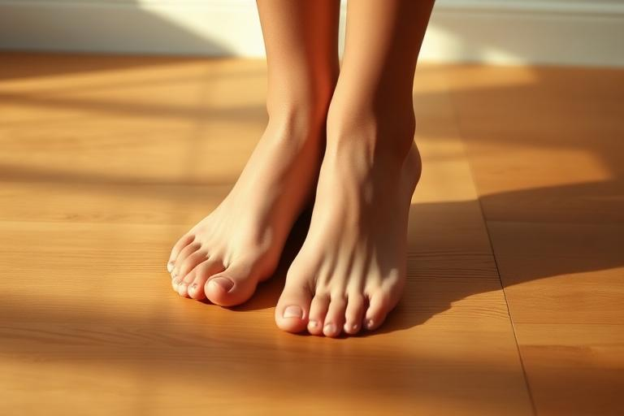
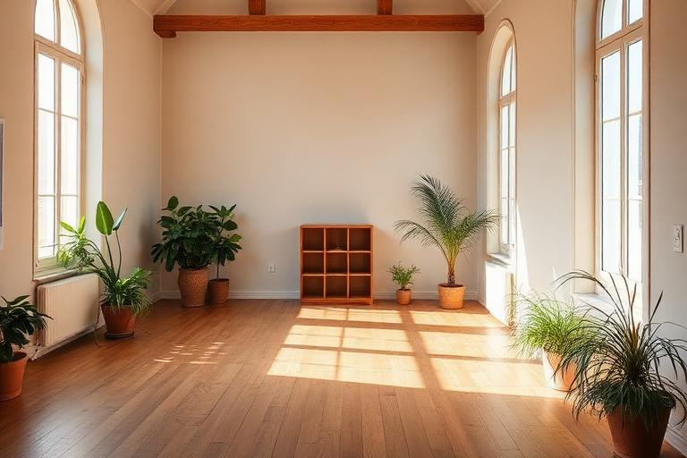

Studio a Roma · Consulenze online
Ritrova l'equilibrio
attraverso il corpo.
Consulenze posturali specializzate a Roma e percorsi personalizzati online per riabitare il proprio movimento.

“Il movimento non è solo spostamento, è consapevolezza di esistere.”
La Metodologia
Dalla tradizione all'innovazione del Movimento Consapevole.
Approccio Posturale Tradizionale
Utilizzo le tecniche consolidate della chinesiologia classica per risolvere disfunzioni biomeccaniche, dolori cronici e vizi posturali attraverso test muscolari e riprogrammazione motoria.
- • Valutazione e analisi posturale
- • Rieducazione posturale globale (Metodo Mézières)
- • Ginnastica correttiva e Back School
- • Trattamento delle algie vertebrali
Metodo: Movimento Consapevole
Il mio protocollo personale che fonde neuroscienze, respirazione e propriocezione. Non solo esercizio fisico, ma una riconnessione profonda tra mente e corpo per ritrovare forma fisica e mentale.
Scopri il protocolloGuida al Benessere
Vedi tutta l'area news
Lavorare in smart-working senza rovinarsi la schiena
5 esercizi fondamentali da fare ogni ora davanti al computer per prevenire la lombalgia.

Perché la propriocezione è la chiave della tua forza
Capire come il cervello percepisce il corpo nello spazio cambia il modo in cui ti muovi.

La routine mattutina per sbloccare le articolazioni
Bastano 10 minuti al giorno per cambiare la tua postura e iniziare la giornata allineati.
Inizia il tuo percorso a Roma o Online
Disponibile per appuntamenti privati nel cuore di Roma o consulenze video personalizzate ovunque tu sia. La distanza non è un limite per il tuo benessere.
Studio Roma
Via del Corso, 00186 Roma
Online
Consulenze via Zoom / Google Meet